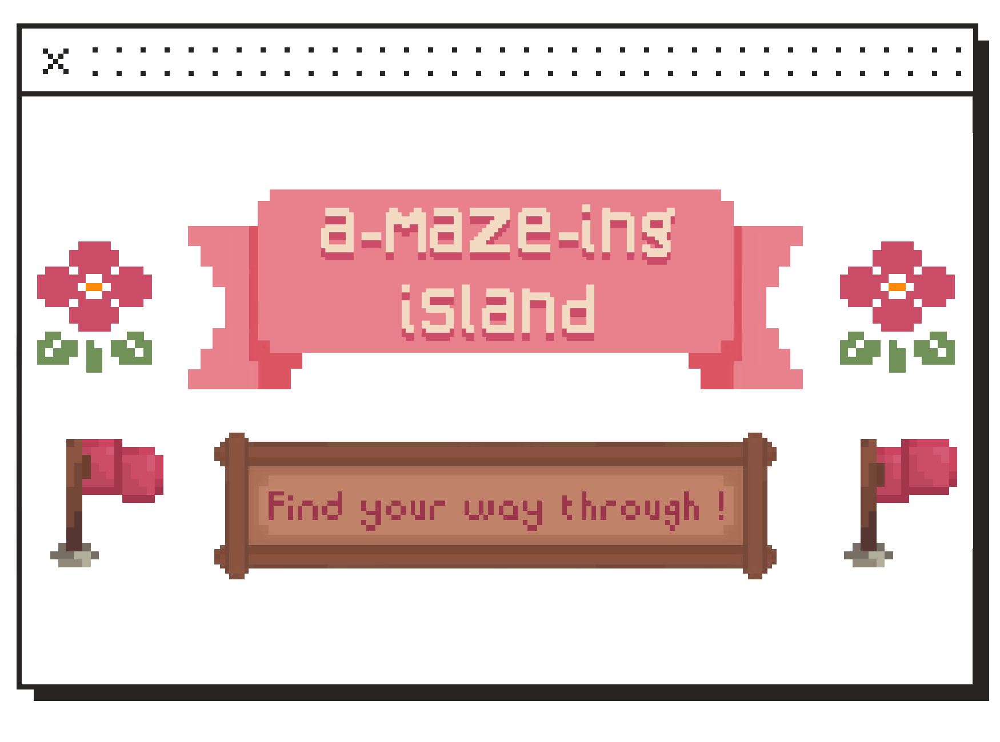
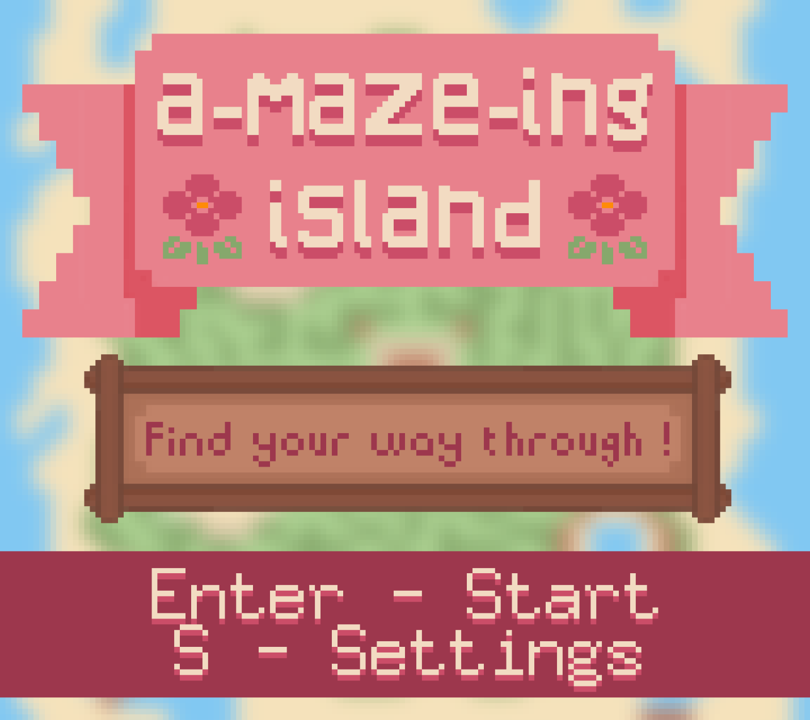
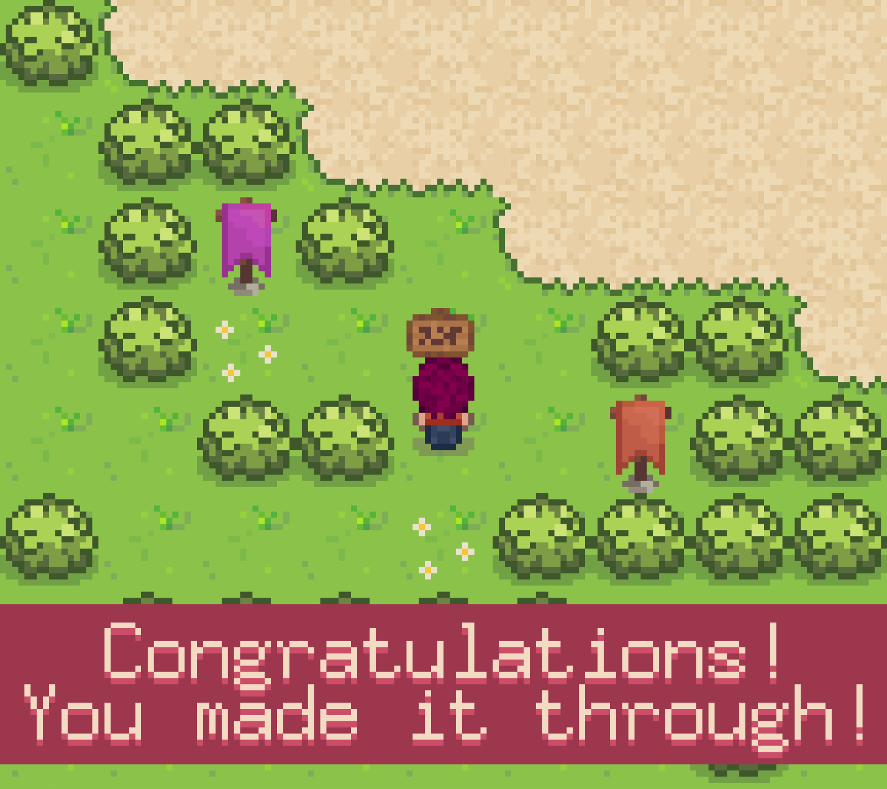
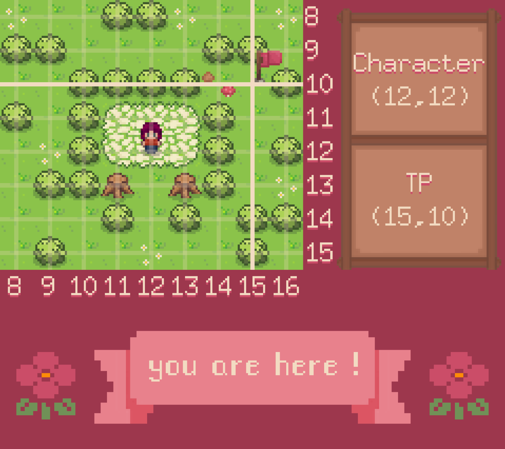
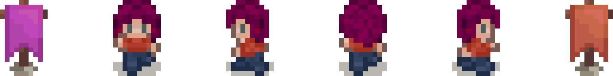

The Amazing Island offers multiple features such as random generation and saving of terrain, the use of teleporters, a precise camera, and particle effects.
1. Amazing Island

The Amazing Island or A-maze-Ing Island is an academic project made in pairs for the modules "Introduction to Software Development" and "Implementation of a Customer Requirement".
The goal of this project is to materialize the movements of a character in the aim of creating a game.
The Amazing Island is a relaxing puzzle game where you play a as nameless character trying to escape from multiple mazes.
Throughout the adventure, you will discover various environments and enjoy soothing animations.
Development
Golang
Quadtree
Game design
Maze




The terrain is stored in memory using a quadtree for which we developed a library.
We used it for its ability to store the structure of a very large image in a compact way.
